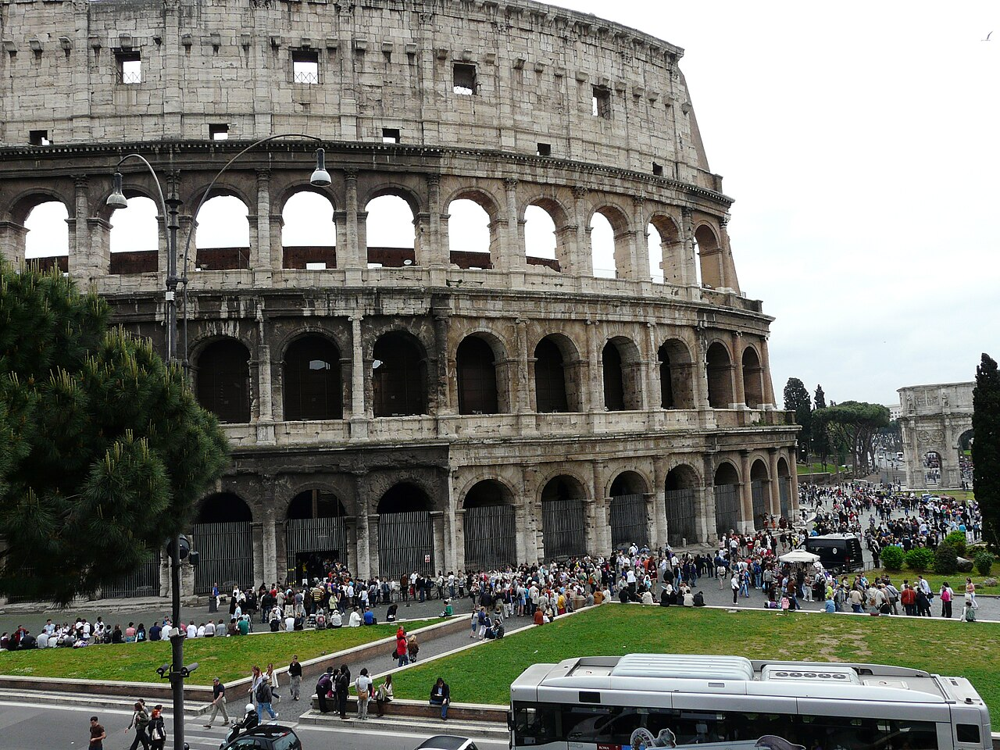

.jpg){kind=link}
Official Site Dossier & Maps · Pompeii, Imperial Rome & Ostia ↗
Primary institutional boundary map, conservation reporting, and site gazetteer for Pompeii, Imperial Rome & Ostia.
Deep dives / Europe & Mediterranean
Whereas centuries of unbroken rebuilding buried most ancient European city blocks, three paired Italian ensembles let us walk inside intact Roman civic and domestic life: imperial Rome’s monumental center, its bustling Tiber–Mediterranean brick port at Ostia, and Pompeii and Herculaneum frozen under Vesuvian tephra in 79 CE.
UNESCO properties 91 (Rome) and 829 (Pompeii, Herculaneum & Torre Annunziata) paired with Ostia Antica imperial-harbor documentation, Ancient Graffiti Project inscriptions and acoustic/spatial forum studies.

Follows Italy’s Tyrrhenian urban spine from Etruscan Cerveteri across Rome and its port Ostia–Portus south to Vesuvian Pompeii and Herculaneum.
c. 500 BCE–500 CE
Colosseum, Roman and Imperial Fora, Aurelian Walls and Monte Testaccio—built from tens of millions of discarded Spanish/African amphorae. [6] [1] [11]
41.89°, 12.48°c. 300 BCE–450 CE
Claudian–Trajanic hexagonal grain harbor basins and multi-storey brick insulae apartments housing Rome’s dockworkers and guilds. [8] [3] [12]
41.76°, 12.29°c. 500 BCE–79 CE
Rutted basalt streets, bakeries, Stabian Baths, tabernae price graffiti and carbonized wooden furniture sealed by Mount Vesuvius. [7] [9] [10] [2]
40.75°, 14.49°c. 850–250 BCE
Major Tyrrhenian Etruscan predecessor city whose urban crafts and rock-cut tumuli shaped early central Italian urbanism. [4]
42.00°, 12.10°Imperial Rome’s monumental marble basilicas and Colosseum relied on vast maritime grain and olive-oil supply chains converging at Ostia and Trajan’s hexagonal Portus basin—where multi-storey brick insula blocks housed diverse cosmopolitan merchant guilds around warehouse horrea and mosaic-paved collegial squares. [6] [8] [3] [1]
At Pompeii and Herculaneum 200 kilometers south, the 79 CE eruption buried multi-use streets lined with stepped curbstones, lead water mains, taverns, fulleries and bakeries intact. Scratched wall graffiti record daily bread and wine prices, electoral endorsements, gladiatorial billing and affectionate verses—turning silent stone ruins into audible Italian neighborhood conversations. [7] [9] [10] [2]
| Italian Urban Anchor | Chronology | Architectural & Social-History Preservation | Sources |
|---|---|---|---|
| Etruscan Cerveteri & Early Rome | c. 850–250 BCE | Tumulus necropoleis, Tiber ford sanctuaries & Republican Servian masonry | [4] [6] |
| Pompeii & Herculaneum (Vesuvius) | c. 300 BCE–79 CE | Bakery ovens, tabernae counters, Regio VII plaster walls & Ancient Graffiti daily price lists | [7] [9] [10] |
| Ostia Antica & Imperial Fora | c. 100 BCE–450 CE | Pozzolana sea harbors at Portus, four-story insula apartments & Acoustic/LiDAR forum studies | [8] [3] [1] |
Contemporary non-invasive campaigns integrate mobile LiDAR terrain models in Campania with 3D acoustic simulation across the Roman, Ostian and Pompeian fora—measuring how orators’ voices carried through open colonnades and marble basilicas while helping stabilize exposed Vesuvian frescoed walls and roofs. [1] [5] [2]
Published excavations and remote-sensing surveys across Imperial Rome (Fora & Testaccio), Ostia Antica & Imperial Portus, Pompeii & Herculaneum distinguish monumental construction events from long centuries of everyday craft, agricultural provisioning, and ritual reuse—relying on radiocarbon series, ceramic seriation, epigraphy, and geoarchaeological sediment cores rather than unverified royal annals alone. [1]
Exchange connections preserved across metallurgical ores, timber/stone sourcing, exotic prestige wares, and architectural styles demonstrate how each local horizon sat inside much broader continental corridors across europe. [2]
Ongoing conservation balancing living community custodianship, climate/erosion stressors, and non-invasive geophysical mapping continues to refine older 19th- and 20th-century excavation hypotheses. Map coordinates pinpoint documented archaeological properties and research zones rather than rigid ancient territorial borders. [6] [1]
Open the source maps for their original detail, legends and dates. Their coverage and reproduction terms belong to the issuing institution.
Primary institutional boundary map, conservation reporting, and site gazetteer for Pompeii, Imperial Rome & Ostia.
Open this era on global Explore ↗ Open Europe & Mediterranean atlas ↗ Climate, sea level & ice-sheet context ↗
Sources checked and linked above; geological and historical dating methods follow the primary papers.